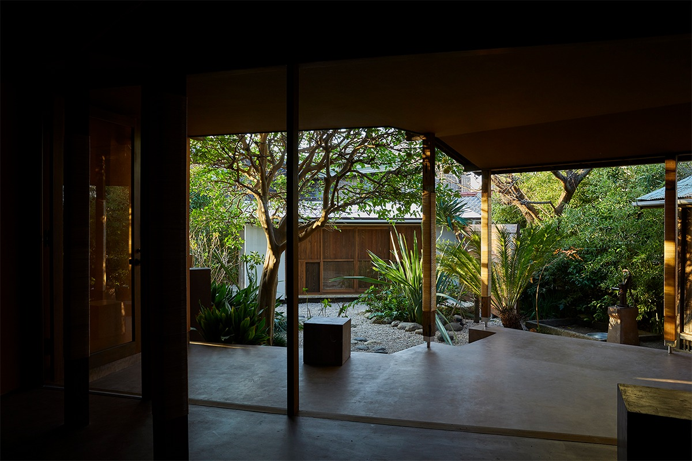
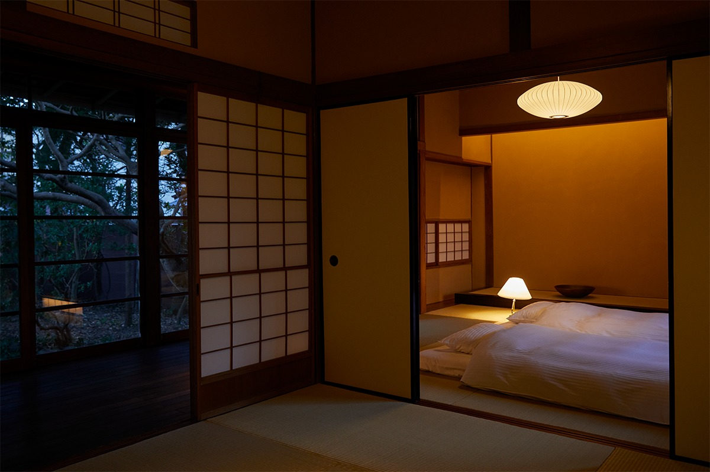
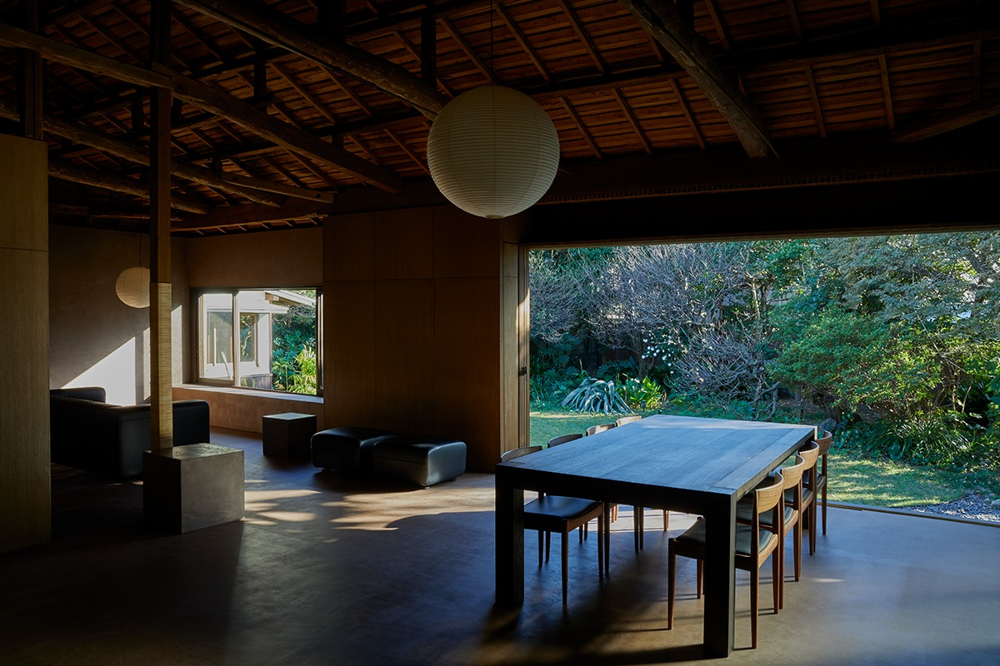
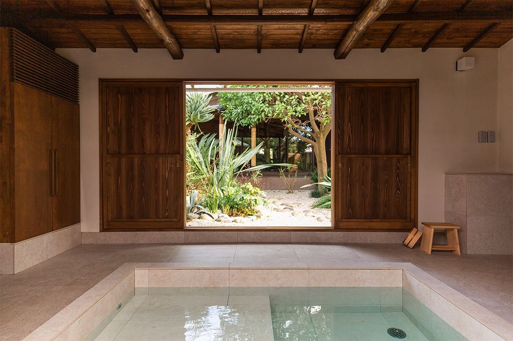
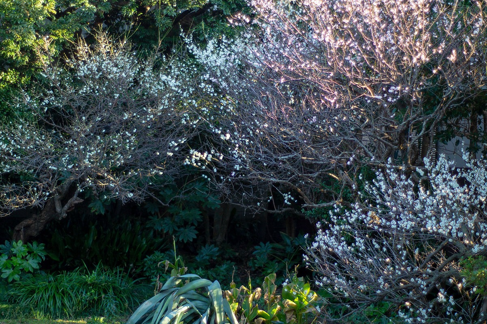
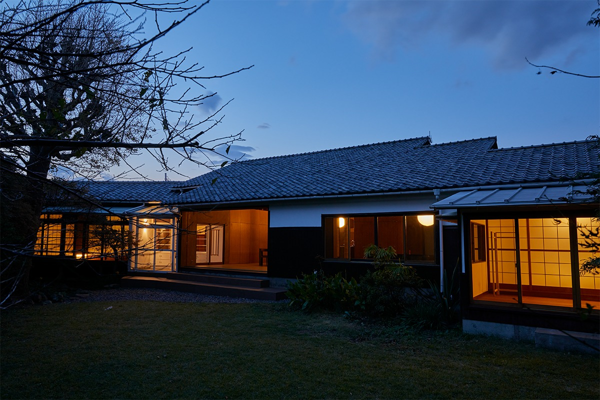

Префектура Канагава · Камакура · где остановиться
MAYA в Камакуре: дом около 1930 года постройки целиком для своей компании

В пятнадцати минутах пешком от станции Камакура стоит одноэтажный дом, которому в 2020 году исполнилось 90 лет. Его сдают только целиком, одной компании на ночь.
Место
Дом в старом портовом квартале
В 2020 году дома, которые можно снять целиком, стали популярны для поездок недалеко от Токио. MAYA из их числа: это загородный дом, куда приезжают не столько ради осмотра достопримечательностей, сколько ради неторопливой жизни с купанием в отдельной бане. От станции Камакура линии JR до него около 15 минут пешком.
Дом стоит в квартале Дзаймокудза. В эпоху Камакура здесь был оживлённый порт, и в этих улицах до сих пор соседствуют старое и новое. Одноэтажный дом окружён зелёным садом, и всё это достаётся одной компании, поэтому сюда удобно приезжать с семьёй или с близкими друзьями.
Спальни
Японские комнаты для крепкого сна

Для сна здесь отведены две японские комнаты, поэтому даже две семьи могут жить в доме, не мешая друг другу. Стены, пол и перегородки сделаны из глины, трав, дерева и бумаги. Осенью из сада доносится пение сверчков, и под него засыпаешь очень быстро. Утром будильник не нужен: мягкий свет проходит сквозь бумажные сёдзи и будит сам.
Кухня
Ужин, который не закажешь ни в одном ресторане

На кухне большая удобная стойка и больше 60 видов посуды и кухонных инструментов, так что любителю готовить есть где развернуться. Ужин можно расставить на столе, за которым помещаются десять человек. В Камакуре легко найти свежие продукты: местные овощи, рыбу и морепродукты из ближних вод, мясо из старых лавок. Поэтому здесь хочется готовить смелее обычного и не жалеть времени на сложные блюда. Можно, например, сварить буйабес, щедро положив в него свежих морепродуктов.
Ужин у хорошего повара это прекрасно. Но еда, которую готовишь вместе с семьёй или друзьями, дарит другое удовольствие: и пока её готовишь, и пока ешь. Блюдо, сделанное с близкими людьми, нельзя заказать ни в одном ресторане мира. Дом с хорошей кухней, снятый целиком, напоминает об этом лучше всего.
Баня
Снова и снова в отдельный домик

Главная особенность MAYA это баня, в которой старое соединено с новым. Её можно назвать банным домиком: как чайный павильон, она стоит отдельно, по другую сторону сада. Горячая вода в ней есть круглые сутки. В просторной ванне, целиком выложенной плиткой, можно отдыхать в одиночку или всей семьёй, смотреть на сад и забыть о суете.

На просторной лужайке, где ухожен каждый лист, можно заниматься йогой, жарить барбекю или дать собаке набегаться вволю. Деревья в саду меняются с каждым сезоном, и вместе с ними меняется вид из окон.

За время поездки начинаешь чувствовать себя жителем этого квартала. Можно купить на ближнем рынке овощи, рыбу и хлеб и провести неспешный день в доме, где зелени вокруг столько, будто стоишь в лесу.
MAYA
- Адрес
- префектура Канагава, Камакура, Дзаймокудза, 3-17-29
- Телефон
- +81 467-33-5639
- Цены / Вход
- от 165 000 иен за ночь
- Номера
- 1 (весь дом), от 2 до 10 человек
- Заезд / выезд
- 10:00 / 16:00
- Как добраться
- около 15 минут пешком от станции Камакура линии JR
- Сайт
- mayakamakura.jp